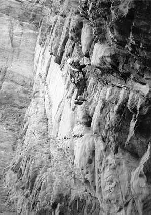
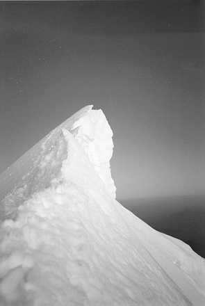

The Pass was cold and wet. Not surprising really since this was North Wales in November. Still, climbing was just about possible provided your hands and feet could cope with the sub-zero temperatures. What's more, the friction was superb, which was a good thing since any juggy holds were wet and slippery leaving only small slopy edges vaguely dry...
But I'm an Australian when it comes to climbing. Sydney is almost perfect: rain is rare, climbing in warm sun is possible even in mid-winter, bolts grow on the rock and even if the weather does turn bad there's always a choice of several local gyms. In comparison England seems to thrive on rain, and climbers view climbing in it as completely normal. Come to think of it, going on a CUMC trip in sunshine leaves me with this uneasy feeling that something crucial is missing. It's like climbing in the sun shouldn't be allowed. Then again, even with Rowland's huge efforts to convince me at Burbage North that climbing V Diff jamming cracks in not just rain, but torrential downpour, was about as fun as it gets, I still prefer the sun. Yep, I'm so sun orientated I get scared off by mere drizzle...
So, there I was, standing looking at Snowdon from the slate huts above Llanberis (incidentally I'd never seen the summit before, although I'd penetrated the mist on many trips to get a close up look), when I really became quite aware that it really might decide to rain today. Not good, actually fairly shite since I'd only done one climb the day before due to rain and I didn't want to repeat all that.
"Want to go to Gogarth?", Stu casually asks. Yeah sure, wasn't that the place that Dave and Scott got benighted on last night and had to be rescued from... Like Gogarth as in SERIOUS committment i.e. no escape route, prussiking not optional but essential if you want to live. Gogarth as in rock that is world famous for its dramatic ability to not actually offer any reasonable pro, but could offer hand and footholds if you are nice to it and don't pull too hard. NOOO WAAAY!!! I want to live thank you very much...
"Go on, you'll love it, it's not that dangerous it's just got this reputation that's been blown out of all proportion." Of course it has Stu, that's why you were stressing last night about acidentally sent Katie off there, and really, like REALLY regretting it later because you thought there was a large chance she could have died... Can I just point out that I am quite famous for having taken more leader falls than can possibly be healthy, and that's just in my first year of climbing...
"It's just like 'The Fear' in Australia. When you've been there you can go back to all your mates and tell them how you've climbed something similar and really impress them." Ah-ha, now we're talking egos, always a good thing with me. For most of you who won't know 'The Fear' doesn't get its name for nothing. Graded 17 (4c/5a) this is supposedly a VS. Which it is if you ignore the E grade seriousness of the whole outing. People die on this route which is why climbing it is officially banned by National Parks Authority which own the cliff. The climbing is technically easy, but hand traverses out over a huge drop with foaming seas below and only rusty bolts for protection are not good. But that's not the point. What is the point is that I was starting to get interested in Gogarth. I'd never climbed on sea-cliffs before, and I was going to have to start one day. Why not?...
At this point Matt helpfully supplies, "Besides which the weather is always better in Gogarth than in the Pass." Whoa, hold everything, I'm going to Gogarth, sign me up at once, I'll go anywhere the weather is at. Besides, like Stu said, it can't be that dangerous can it? And I'll have some experience to go sea-cliff climbing when I get back to oz... Yeah, that's got to be it, go to Gogarth and then sea-cliffs in Sydney, deep water soloing in Portland... Toptastic idea.
Gogarth here we come... I'm ready for it, and keen to climb. The question now was, just what exactly are we going to climb? Matt eventually decides to climb Britomartis, a juggy/overhanging HVS just left of Wen zawn. This sounds daunting to me, but assured that it is actually quite easy, and still buzzing with the anticipation of the whole Gogarth experience I agree.
All the way to Gogarth we sit in a window of sun. Around us ominously grey clouds hang in the sky, yet the minibus always seems to be centred on the little patches of sun that filter through. This just has to be a good sign. Always the optimist, the sun disappears just before we arrive and is cunningly replaced by drizzle. This is really annoying as now we don't know whether to climb or not. The weather is not to bad, and out to sea there is clear sky. Is it coming this way or not? We hesitiate, and this proves to be our downfall. Another group beats us to the climb, willing to risk the weather. Still, we reckon that if they go out ahead, by the time it clears up there will still be plenty of time to do the climb, and we'll get much better weather. Quick glance at my watch... 11:30, bags of time...
So what now? Wait. More waiting... hmm. I know I'll just go and have a quick peek at Wen zawn. After all I've heard so much about it, and Dream of White Horses, can it really be all that scary? I carefully pick my way down the path, round a corner and
"FUUUCK!" That is just far too impressive. Hang on, swallow, keep breathing, close eyes, open eyes again. Right where was I? "FUUUUUUCK!!!" It's still there, it's real, very real. I can't believe this. Big just doesn't even begin to describe it. "FUCK, FUCK FUCK, OH FUCK... WOW!" (Brain obviously can't cope with the language required here) Calming down now, my heart attempts to return normality. I pick out at least three groups on the face.
"Those guys in the middle are doing Dream," Matt informs me. Obviously he's been here before and the effect has worn off a little. A grin comes over his face as I let out a more restrained "fuuck!" under my breath.
"Man, do I need a dump." For some reason my body seems to have just lost control of all it's main functions.
"No, that's normal. I always get that when I come to Gogarth. It's all part of the Gogarth experience. Don't worry, It'll go once you get on the route. You don't really need a dump, you just think you do."
Sure, whatever you say Matt. Looking around I notice a disturbing lack of vegetation. Damn, maybe it will go away after all.
The waves below crash around the rocks, sending small plumes of spray into air. And this is a calm day? Serious stuff; once you've rapped in there are only two ways out: Climb or prussik. (Discounting the rescue helicopter option!) Hang on what's all that gear doing in the final pitch of Dream? Looks like the last party had a real mare and had to prussik out leaving all gear in place. Whoa, I had better not underestimate this place.
12:30. What are those faffers doing? The group in front has just set up the abseil and are preparing to rap down. How long does it take? Still plenty of time left... Their leader asks for some beta on the climb, and luckily Matt has done the route before so offers some advice. They don't look very competent though. We suspect that this will be a very hard route for them.
1:00. Lunch is enjoyed in the sun which has finally decided to show itself. We reckon that the group in front shouldn't take ridiculously long, and so give them until 2 before we even think about moving. The next hour is spent lazing around watching the other groups climbing in Wen zawn. I'm intensely jealous and itching to get climbing.
2:00 Start racking up. Harness, ATC, boots... shit they're tight... chalkbag. Right that's it. No, wait, camera. Nearly forgot. OK lets go.
2:30 Decide to rap down on their rope. This rope is a bit on the thin side, could be a fast descent. Oh well, over the edge. I hate rappiiiiiing, oooh shiiit... heeelp! Too fast, much too fast. Slow down now. No really, slowing down would be good. Somehow I manage to hit the ledge at a reasonable speed all in one piece. But wait a sec, what are these faffers still doing here? Their leader is still on the first pitch! Matt is not going to be amused when he sees this.
Options are limited. Prussik out or find .html route. I don't have prussik loops (whoops) and we don't have a guidebook. So... hmm... Where's Matt gone?
A few minutes later Matt reappears from around a corner. "Do you want the good news or the bad news?" Uh-oh, why do I always get a bad feeling when I hear that?
"Yeah, whatever." I'm not too enthusiastic about what I might be about to hear. But I needn't have worried. Turns out that Matt was trying to traverse into Wen zawn, but couldn't. Like why don't we just try and walk on water, I can't believe he was serious about this. So much for the bad news. The good news was that he had spied a line that we might be able to escape up. I'll try anything that doesn't require prussiking, and agree to give it a go.
A minor traverse around the corner gets the excitement going. We're just above the sea now, and the waves are crashing into Wen zawn a few feetaway. This is serious stuff. Matt takes the first pitch and the technical difficulties don't seem that hard. Pretty juggy rock, at least if you're into sidepulls, and amazing atmosphere. The route goes up a groove, the angle on the friendly side of vertial.

Dave on Mousetrap, Gogarth
Photo: Dave Hollinger
Matt hesitates. Looking for pro that doesn't exist before making a side step to better holds. This seems to be the first difficulties on the route. I hope it doesn't get harder further up.
"This nut is only for psychological value," Matt calls down. Too right, it looks like it could wobble out any second. Hope you're not planning on falling Matt... He steps out right, but the move was nothing, easy.
Before I know it Matt is at the first belay and it's my turn to come up and join him. Off I go, eager to get my hands around some holds. The rock is so cool. Flakey, but solid enough to pull on. Jugs abound if you know where to look. The climbing is great: Step up, place left foot, side pull off left hand, reach up with right... ledge over there, just bridge out with my right foot, ahh got it, shift weight, chalk up, what a pinch. Moving up fluidly, nothing bold or tricky, just engrossing climbing. I look below, the waves seem further away, I suddenly realise that I'm a small figure on a huge cliff and that Gogarth feeling comes back to me. Why do I need the loo now, this isn't fair...
There's Matt's nut. I flick it out casually, that wasn't too hard to remove, wasn't really worth placing. Where to now? Ah, must be up there on the right... These holds aren't that big, there must be an easier way. Nope, looks like I'll have to do it. Come on, it's not hard, just committing, I tell myself. I know I've made loads of commmiting moves before... This is just .html. Deep breath, swing out... got it. Quick, feet, smear, walk up, place... Much better. Wasn't hard at all.
The rest of the climbing to the belay is superb, big holds, the route is obvious and best of all the sun is still shining. It's my turn to take lead now. All of a sudden I don't want to, but then I realise that the next pitch is even easier than the first. So off I go. Methodical, relaxed climbing. Before I know it I'm on a huge ledge with a tricky section above, but it's just started raining. It's not fair. I try the moves, but with no pro it's just too scary. I chicken out, set up a belay and tell Matt to join me. Doh!
He's quickly at the ledge and looks up. 'Oh, that doesn't look too easy', is about his only reponse. But not to matter, Matt knows there is a way out of this off to the left and off he scurries, round the corner I hear a few grunts and moments later he is at the top. That was quick I think. The belay is quickly dismantled and I rush over in the general direction of where the rope is trailing. The actual moves off the ledge are the most technical of the entire climb, but seem effortless, enjoyable. Gogarth was made for laybacking and crimping, and I use a combination of these to get up the hard section (without the grunts). And then I'm there, over the top, to the sight of Matt smiling broadly with the sun setting over the waves. What a day, what a route...
All that remained was a name, and a grade. Must have been a new route. No-one else would take such a non-sensical random route like that. Matt & Pete's Excellent Adventure summed it up. Graded VS (it's at Gogarth, it has to be), 4c (but only for a short bit). Chances are no-one will want to repeat it, but we enjoyed it. Who needs guidebooks eh?

Cornice on the Aguille de Bionassay
Photo: Matthew Brown